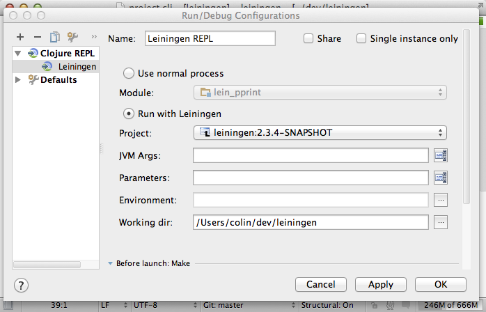
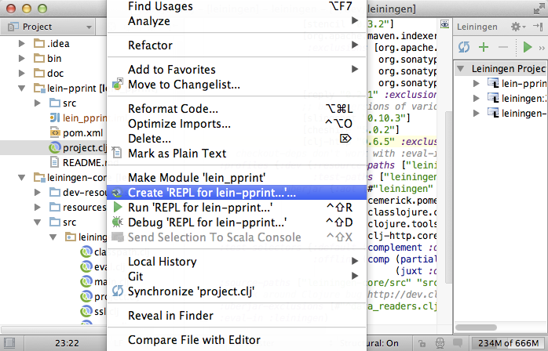

REPL¶
REPL は Clojure の開発環境になくてはならないものであり Cursive も例外ではありません。 Cursive は nREPL を使っています。それは Clojure のためのデファクトスタンダードな REPL の基盤です。
ローカル REPL¶
REPL は Run Configurations から起動出来ます。もしあなたが Leiningen をプロジェクトで使っているなら直接 Leiningen プラグイン( lein-immutant など)を用いて REPL を起動することが出来ます。他には IntelliJ モジュール設定基盤の上でも REPL を起動出来ます。
新しい設定を作成します、 Run -> Edit Configurations… と開き + で新しい設定を作成します。 Clojure REPL の Local を選択します。

それから設定に名前を付けることができます。また REPL を実行するのに Leiningen を使うから直接起動するかを選択できます。もしあなたが Leiningen を使ってプロジェクトを管理しているのならほぼ間違いなく Leiningen で REPL を起動させたいと思います。場合によって、あなたはどのモジュールを使うのか、どこから Leiningen プロジェクトを実行するのか、特別な JVM の引数、環境変数、それとワーキングディレクトリを選択することができます。
REPL を Leiningen を使って実行する場合、 Cursive は内部的に lein trampoline と同様のメカニズムを使っています。もし何かしらの理由であなたの REPL が trampoline を使って正しく動かない場合は、代わりに下で述べるリモート REPL の項を見てください。
設定編集ウィンドウの下部から、あなたの設定を走らせる前に実行するタスクを修正できます。特に興味深い設定は Synchronize Leiningen projects と Make でしょう。これらは Leiningen プロジェクトと Cursive プロジェクトの依存性を同期し、プロジェクトをビルドします。 Synchronize Leiningen projects は Leiningen の実行構成を動作させるためには必要ありません。 Leiningen は REPL を起動する前にプロジェクトファイルを再読み込みするので、このオプションを付けても REPL の起動が遅くなるだけでしょう。
もし特定の実行構成タイプの初期設定を変更したければ、左側 Defaults セクションから変更出来ます。新しい設定を作成する場合にその設定が使用されます。
それらには同様の実行構成を作成するためのショートカットがあります。もし、プロジェクトウィンドウのソースルート以外の適当なところで右クリックをしたら、直接実行構成を作成するための選択肢が表示されます。
デバッグ REPL を開始する¶
非常に有用なひとつの特徴は REPL セッションをデバッグできることです。これは今とても単純です。あなたのローカル設定をデバッグモードで実行するとデバッガーは自動的に接続します。

Clojure のデバッグを非常に困難にしているもののひとつにローカルクリアリング(locals clearing)[#]_ があります。ローカルクリアリングは、メモリへの参照がそれ以降には使われないと Clojure コンパイラが判断した場合に、メモリ参照へ nil を代入するコードをコンパイラが自動的に挿入することをいいます。デバッグをする際にこれが問題になることがあります。つまり、コード上では null になるはずがないにもかかわらず、多くのローカル変数に null が代入されているのを目にすることになるでしょう。この処理は遅延シーケンスのメモリリークを防ぐ目的で行なわれています。遅延シーケンスでは、同じシーケンスが常に同じ値を同じ順序で返すことを保証するためにメモリ上に値がキャッシュされるためです。ローカルクリアリングは初心者には分かりにくく、またほとんどの人にとってデバッグを煩わしいものにします。
Cursvie は全てのデバッグ REPL でローカルクリアリングを無効にして開始し、全ての REPL はツールウィンドウの  ボタンから REPL サーバーのデバッグモードをトグル出来ます。注目するのはこれがコンパイラの機能であるということで、つまりコンパイル時のみに影響があるということであり、それはランタイムフラグではありません。
ボタンから REPL サーバーのデバッグモードをトグル出来ます。注目するのはこれがコンパイラの機能であるということで、つまりコンパイル時のみに影響があるということであり、それはランタイムフラグではありません。
これはそれをトグルした場合にあなたがデバッグするコードを再コンパイルする必要があるということです。一般的にはトグルをオンにしたあとにそれを REPL をリロードするということです。それからロングランニングプロセス(例えばプロダクションサーバープロセス)の中でローカルクリアリングを無効にするのはとても注意が必要です。それはメモリリークの原因となります。
REPL 起動時のタイムアウト¶
Cursive は REPL 起動時のタイムアウトを設定出来ます。これは REPL を起動させるまでに Cursive が待つ時間だと考えるのは誤りです [1] 。デフォルトでは 60 秒に設定されています。 Settings -> Clojure -> REPL startup timeout から変更できます。
リモート REPL¶
もうひとつの方法として、もしあなたが既に走っている nREPL サーバーを持っている場合、それを Remote 設定を使えば nREPL サーバーに接続出来ます。ふたつのオプションがあり、接続するホストとポートを指定するか、 127.0.0.1 と Leiningen に書かれたポートに接続するよう設定できます。もし何らかの理由で(例えば Cursive から trampoline オプションを付けた REPL が起動出来ないとか [2] ) REPL を Leiningen を用いてコマンドラインから起動させたいといった場合に、このオプションを使うことが出来ます。
あなたは幾つもの REPL を好きなように起動でき、それらは REPL ツールウィンドウの中にタブで表示されます。
REPL を使う¶
今あなたが REPL を実行していれば、下の方にあるエディターウィンドウにタイプすると、その結果が上の方に表示されます。現在のネームスペースはツールウィンドウのタブタイトルに表示されます。正しいフォームの最後にカーソルがあるときに Enter を押すか、 Ctrl + Enter(Mac なら Cmd + Enter) を押せばいつでもコードを実行することが出来ます。エディターは複数行書けますし、メインの Clojure エディターで使える機能を全てサポートしています。実行したコマンドの履歴はカーソルキーの up/down か、複数行のアイテムであれば Ctrl とカーソルキー (Mac なら Cmd とカーソルキー)を使って移動できます。もしただのカーソルキーを使った場合にヒストリーを移動したくないのであれば、 Settings -> Clojure -> Up/Down arrow keys move between history items から無効に出来ます。
アウトプットウィンドウ上部にあるボタンを使えば、実行中のコードの中断、アウトプットの折り返し、アウトプットのクリア、 REPL の停止に再接続(リモート REPL に対して)が出来ます。
エディタとの対話¶
しばしば、あなたはメインプロジェクトウィンドウで編集中のコードを、プロジェクトから実行中の REPL へと送りたくなるでしょう。それは Tools -> REPL の下のコマンド群からできます。 Load file in REPL は現在のエディタウィンドウの内容を REPL へと送り、もしあればそれらのコードを実行し、最初のネームスペースへとスイッチします。何が起きたかはメッセージが画面上へと表示されます。
Load file in REPL はファイルのネームスペース依存性を解消してロードし、もし古い依存性があれば正しい順序で依存性を解消します。これは複数のネームスペースを持つプロジェクトで編集しているときに、あなたがメインで作業しているファイルが更新されたファイルを知らないうちに含んでしまっているときなどにとても役に立ちます。同様にテストコードを書いているときなどにも便利です。
Sync files in REPL は古くなった全てのファイルをエディターから REPL へと正しい順序で、 Load file in REPL と同じように依存性を解消してロードします。これは REPL 内でアクティブになっているネームスペースを変更しません。
この依存しているネームスペースの読み込みは期待しない副作用をもたらすことがあります。特に、ある依存しているネームスペースがデータを作っている場合には再読み込みすることで上書きしてしまします。もしこれが嫌な場合は Settings -> Clojure -> Load out-of-date file dependencies transitively から依存性解消機能をオフにできます。

それから Switch REPL NS to current file で REPL のネームスペースを現在のファイルにスイッチでき、 Run form before cursor と Run top form コマンドでエディタから単一のフォームを評価できます。
| [1] | 訳しててよくわからないのであとで修正するかもしれない。 http://clojure.org/lazy 現段階での私の理解としては、遅延シーケンスにおいてスタックオーバーフローが起こらないように、スタックをクリアにすることを local clearing(or local-variables clearing) と Clojure では言うということ。そして Cursive はそれを無効にすることが出来る(らしい)。 |
| [2] | 日本語が難しいですが、タイムアウトまでの時間を設定出来るという解釈で問題ないと思います。 |
| [3] | 元のドキュメントでは言及されていませんが、 Boot などを用いる場合もリモート REPL から接続することになります。 https://www.google.co.jp/search?sourceid=chrome-psyapi2&ion=1&espv=2&es_th=1&ie=UTF-8&q=Cursive%20boot&oq=Cursive%20boot&aqs=chrome..69i57j0l2j69i59.1712j0j1 |